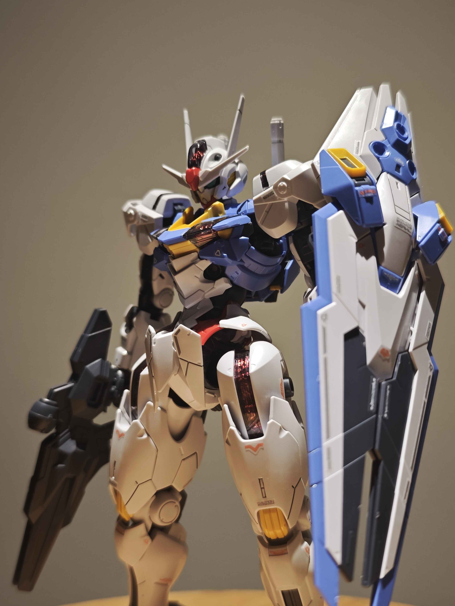
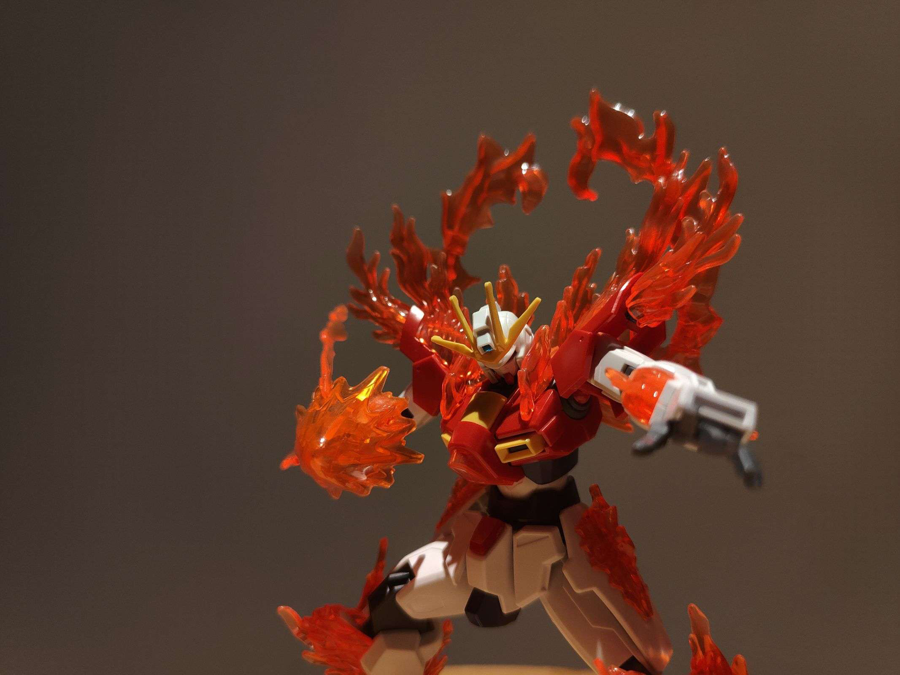
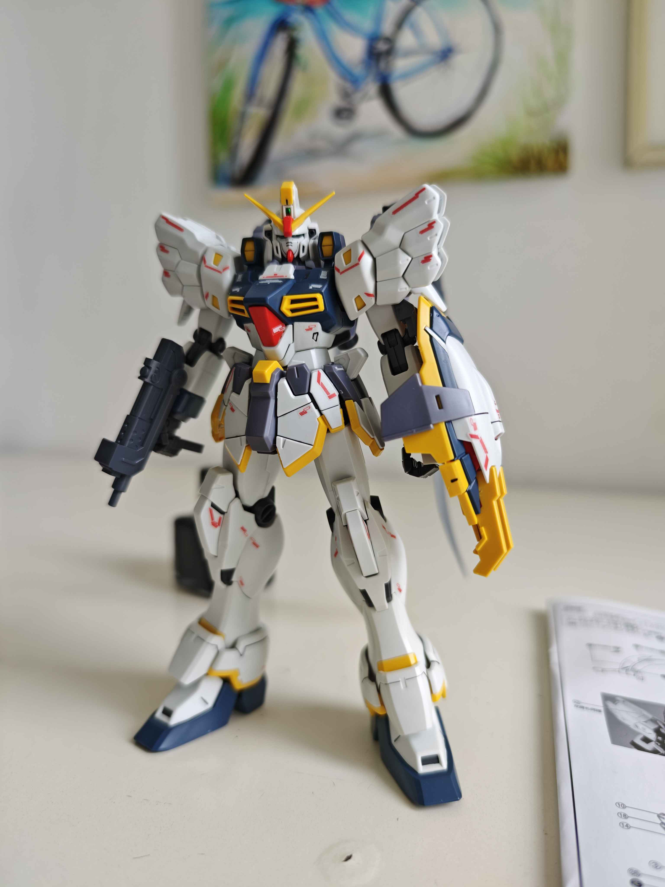
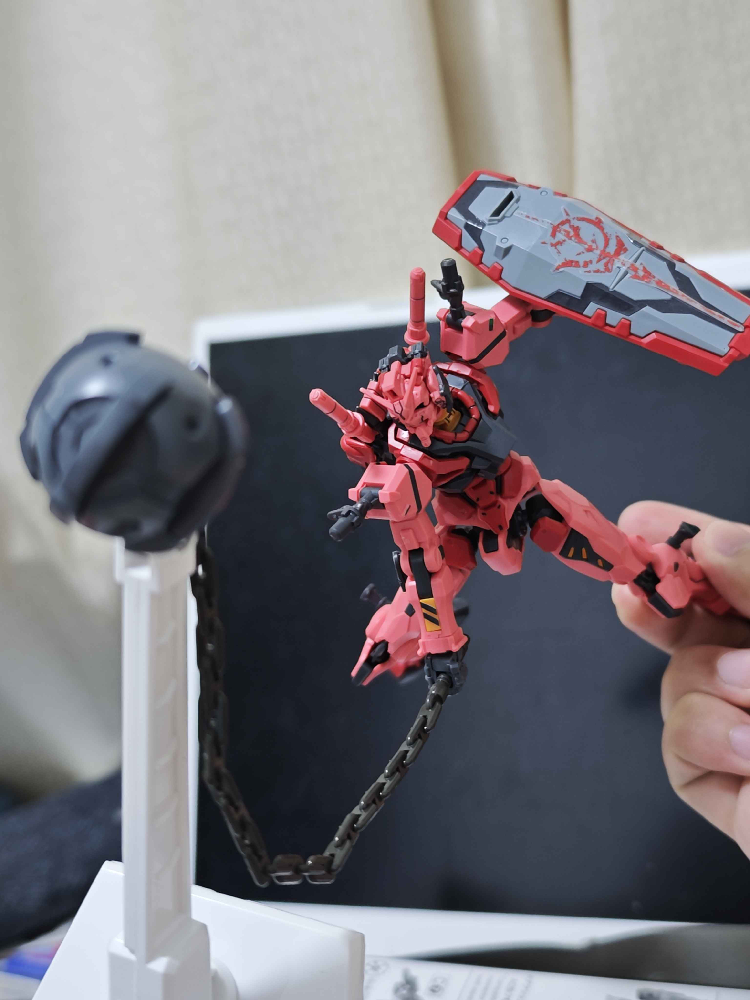
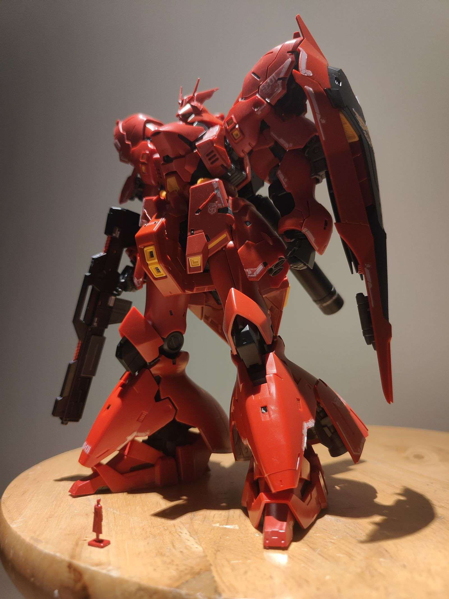
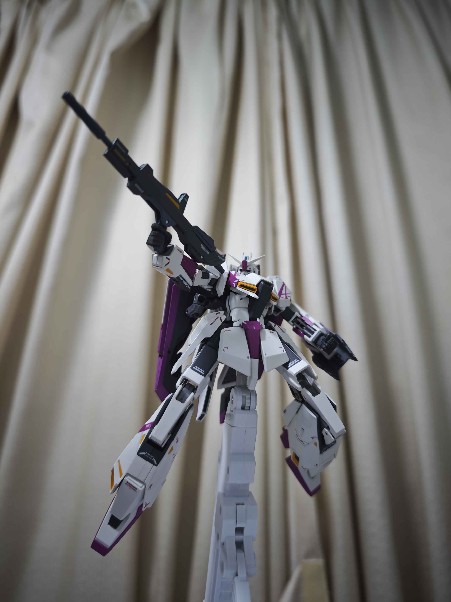
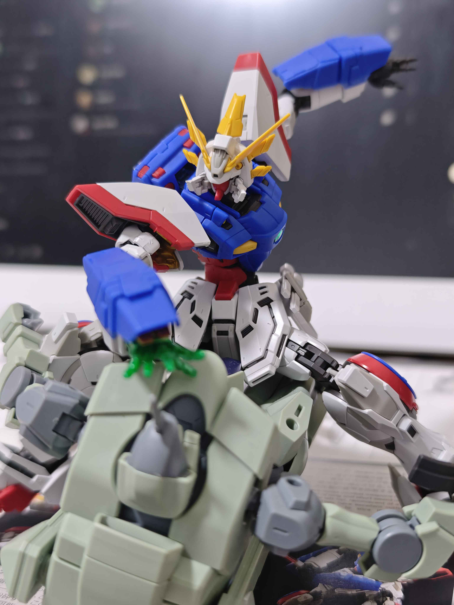

History of Gundam
Gundam is a Japanese military science fiction media franchise. Created by Yoshiyuki Tomino and Sunrise, the franchise features giant robots, or mecha, with the name "Gundam". The franchise began on April 7, 1979, with Mobile Suit Gundam, a TV series that defined the "real robot" mecha anime genre by featuring giant robots called mobile suits (including the original titular mecha) in a militaristic setting.
The popularity of the series and its merchandise spawned a franchise that includes 50 TV series, films and OVAs as well as manga, novels and video games, along with a whole industry of plastic model kits known as Gunpla which makes up 90 percent of the Japanese character plastic-model market.
Timelines
As mentioned above, the Gundam IP includes a lot of different timelines and alternate universes, each with its own unique storylines and characters. Some of the most notable timelines include the Universal Century, which is the original timeline and features the iconic RX-78-2 Gundam, and the Alternate Universe timelines, which explore different takes on the Gundam concept.
Each timeline offers a fresh perspective on the Gundam universe, introducing new characters, mecha designs, and story arcs that resonate with different audiences. But even though they may differ in style and narrative, the core themes of war, peace, and the human condition remain central to all Gundam stories.
Gundam Timeline
| Anime Title | Release Year | Timeline | Year in Timeline |
|---|---|---|---|
| Mobile Suit Gundam | 1979 | Universal Century (UC) | UC 0079 |
| Mobile Suit Zeta Gundam | 1985 | Universal Century (UC) | UC 0087 |
| Mobile Suit Gundam ZZ | 1986 | Universal Century (UC) | UC 0088 |
| Mobile Suit Gundam: Char's Counterattack | 1988 | Universal Century (UC) | UC 0093 |
| Mobile Suit Gundam 0080: War in the Pocket | 1989 | Universal Century (UC) | UC 0079 |
| Mobile Suit Gundam F91 | 1991 | Universal Century (UC) | UC 0123 |
| Mobile Suit Victory Gundam | 1993 | Universal Century (UC) | UC 0153 |
| Mobile Fighter G Gundam | 1994 | Future Century (FC) | FC 60 |
| Mobile Suit Gundam Wing | 1995 | After Colony (AC) | AC 195 |
| After War Gundam X | 1996 | After War (AW) | AW 15 |
| Turn A Gundam | 1999 | Correct Century (CC) | CC 2345 |
| Mobile Suit Gundam SEED | 2002 | Cosmic Era (CE) | CE 71 |
| Mobile Suit Gundam SEED Destiny | 2004 | Cosmic Era (CE) | CE 73 |
| Mobile Suit Gundam 00 | 2007 | Anno Domini (AD) | AD 2307 |
| Mobile Suit Gundam AGE | 2011 | Advanced Generation (AG) | AG 115 |
| Gundam Build Fighters | 2013 | Near Future (Real World) | N/A |
| Gundam Reconguista in G | 2014 | Regild Century (RC) | RC 1014 |
| Mobile Suit Gundam: Iron-Blooded Orphans | 2015 | Post Disaster (PD) | PD 323 |
| Mobile Suit Gundam: The Witch from Mercury | 2022 | A.S. (Ad Stella) | AS 122 |
History of Gunpla
Gundam Plastic models, Gundam Plamo, or Gunpla are model kits depicting the mecha machinery and characters of the fictional Gundam multiverse by Bandai Spirits.
These kits became popular among mecha anime fans and model enthusiasts in Japan and nearby Asian countries beginning in the 1980s. Gundam modeling spread in the 1990s with North America and Europe being exposed to Gundam through anime and manga.
The name Gunpla derives from an abbreviation of "Gundam plastic model" phrase, since most kits are made of plastic. Bandai sold over 100 million Gundam plastic model units between 1980 and 1984, and over 300 million units by May 1999. Recently, Bandai had sold an estimated 450 million units worldwide across nearly 2,000 different Gundam models.[3] As of March 2021, Bandai Namco has sold 714.84 million Gundam plastic model units, including 538.24 million standard Gundam units (since 1980) and 176.6 million SD Gundam units (since 1987).
Different grades of Gunpla
Gunpla kits are available in various grades, each offering different levels of detail, complexity, and articulation. The most common grades include:
- Entry Grade (EG): These kits are designed for beginners and are easy to assemble, often requiring no glue or paint.
- High Grade (HG): These kits are typically 1/144 scale and are known for their affordability and ease of assembly, making them suitable for beginners.
- Real Grade (RG): Also in 1/144 scale, RG kits offer a higher level of detail and articulation compared to HG kits, often featuring advanced engineering techniques.
- Master Grade (MG): These kits are larger, usually 1/100 scale, and provide a more complex build with intricate details and features.
- Perfect Grade (PG): The most detailed and complex kits, PG models are typically 1/60 scale and include advanced engineering, LED lighting options, and extensive articulation.
- Super Deformed (SD): These kits feature a chibi-style design with exaggerated proportions, making them fun and easy to build.
Showcase of Gunpla that I built Recently
Aerial Gundam is known for its sleek design and Gunbit System, which allows for advanced aerial maneuvers.
Build Burning Gundam is a fan-favorite from the Build Fighters series, known for its vibrant colors and dynamic poseability.
Sandrock Gundam is a classic design from Gundam Wing, featuring a unique desert-themed color scheme and weaponry.
Red Gundam from gquuuuuux is known for its brand new design and impressive articulation.
Sazabi is a fan-favorite from Char's Counterattack, known for its imposing size and intricate details.
Zeta Gundam 3 is a classic design from the Zeta Gundam series, featuring a unique transformation mechanism and sleek design.
Shining Gundam is a fan-favorite from the Build Fighters series, known for its vibrant colors and dynamic poseability.